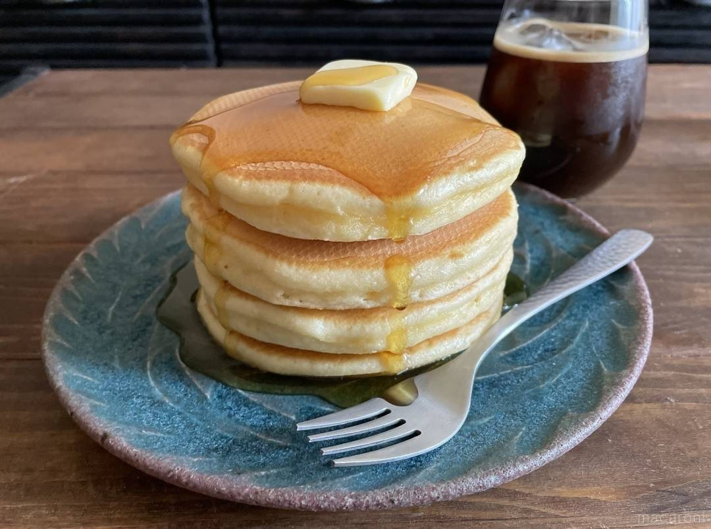

Pancakes (mom's art)
Description
A pancake is a thin, flat, circular
piece of cooked batter made from milk, flour,
and eggs. Pancakes are often rolled up or
folded and eaten hot with a sweet or savoury
filling inside.
- 小麦粉
- Backing Soda
- Sugar
- Egg
- Milk
- Vanilla essense
- Butter
- Salad oil
Steps
- ●の材料をボウルに入れ泡立て器で
シャカシャカ混ぜる。
- １に牛乳、卵、バニラエッセンスを加え泡立て器で滑らかに
なるまで混ぜる。
- フライパンにサラダ油を薄くひき、焼く。
- お好みでバターやシロップをかけてどうぞ♪
- 『I am Micky♪』
子どものテンション上がります(^^*
- 3姉妹ちゃんママから薄力粉+強力粉のアイデア★
早速試したところ
『ふわもちッ』でした♪皆さんもお試しを☆
- 砂糖→黒糖に変えて小ぶりを6枚焼いて、
どら焼き3つ出来上がり♪